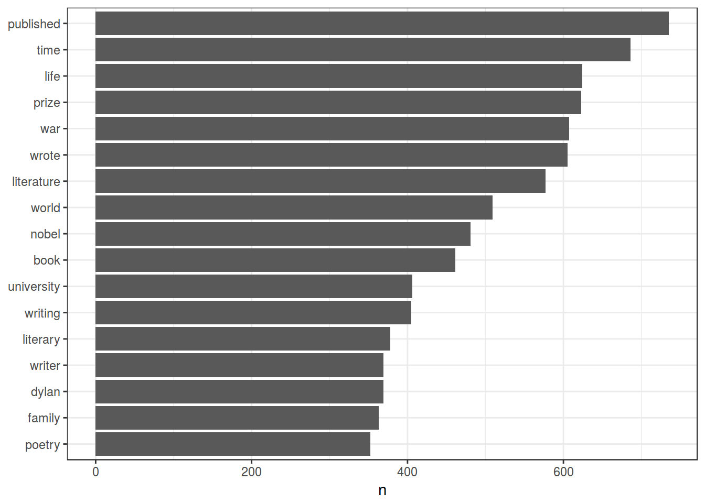
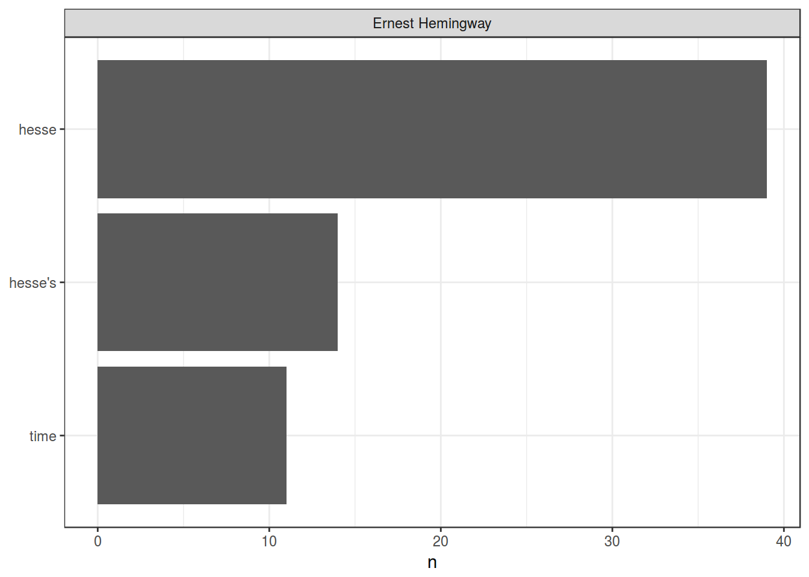

Можно долго и нудно бороться с тегами скаченной веб-страницы, однако можно использовать CSS-селекторы.
library(tidyverse); library(rvest); library(tidytext)source <- read_html("https://ling.hse.ru/news/")rvestsource %>%
html_nodes("div.post:nth-child(2) > div:nth-child(2) > h2:nth-child(1)") %>%
html_text() ->
titles
titles## [1] "«Я поняла, что хочу учиться здесь и нигде больше»"rvestsource %>%
html_nodes("h2") %>%
html_text() ->
titles
titles## [1] "«Мыслить научно и всегда быть up-to-date»"
## [2] "«Я поняла, что хочу учиться здесь и нигде больше»"
## [3] "Открытие сайта Атласа многоязычия Дагестана"
## [4] "«Еще полгода назад я не программировала, а теперь мне снится код»"
## [5] "Курица не птица: мастер-класс по снятию лексической неоднозначности"
## [6] "100 лет независимости Финляндии, или преподаватели РКИ на конференции в Хельсинки"
## [7] "«Нужно сделать так, чтобы школьники почувствовали себя исследователями»"
## [8] "«Студентам Вышки недостаточно просто знать — они хотят решать научные проблемы»"
## [9] "Социальные сети Медеи, Арагорна и Ганнибала Лектера"
## [10] "Лингвисты Вышки на «Диалоге–2017»"Давайте сделаем аналогичное для текстов
source %>%
html_nodes("div.post__text") %>%
html_text() ->
texts
head(texts)## [1] "\n\t\t\t\t\n\t\t\t\t\t\n\t\t\t\t\n\t\t\t\tВыпускник бакалавриата «Фундаментальная и компьютерная лингвистика» Григорий Игнатьев — о том, как Вышка избавляет от узости мышления, о «ламповой» атмосфере школы лингвистики и немного о любви.\n\t\t\t"
## [2] "\n\t\t\t\t\n\t\t\t\t\t\n\t\t\t\t\n\t\t\t\tВыпускница бакалавриата Александра Мартынова — о своих четырех годах изучения лингвистики, профессорском борще и важности глупых вопросов.\n\t\t\t"
## [3] "\n\t\t\t\t\n\t\t\t\tСотрудники Международной лаборатории языковой конвергенции работают над Атласом многоязычия Дагестана. Совсем недавно при поддержке лаборатории и Collegium de Lyon открылся сайт, который представляет собой ресурс для исследований различных социальных и географических особенностей многоязычия в Дагестане.\n\t\t\t"
## [4] "\n\t\t\t\t\n\t\t\t\t\t\n\t\t\t\t\n\t\t\t\tСтуденты программы профессиональной переподготовки «Компьютерная лингвистика» поучаствовали в хакатоне «Мемориала» — и поделились своими впечатлениями.\n\t\t\t"
## [5] "\n\t\t\t\t\n\t\t\t\t\t\n\t\t\t\t\n\t\t\t\tСлушатели магистерской программы «Компьютерная лингвистика» узнали о современных методах автоматического разделения и выявления значений многозначных слов.\n\t\t\t"
## [6] "\n\t\t\t\t\n\t\t\t\t\t\n\t\t\t\t\n\t\t\t\t7-9 июня в университете Хельсинки (Финляндия) состоялась конференция \"Русская грамматика: описание, преподавание, тестирование\", в которой приняли участие и преподаватели Центра РКИ НИУ ВШЭ.\n\t\t\t"Скачайте список нобелевских лауреатов по литературе.
## [1] "Shmuel Yosef Agnon" "Vicente Aleixandre" "Svetlana Alexievich"
## [4] "Ivo Andrić" "Miguel Ángel Asturias" "Samuel Beckett"## [1] "https://en.wikipedia.org/wiki/Tomas_Tranströmer"
## [2] "https://en.wikipedia.org/wiki/Sigrid_Undset"
## [3] "https://en.wikipedia.org/wiki/Mario_Vargas_Llosa"
## [4] "https://en.wikipedia.org/wiki/Derek_Walcott"
## [5] "https://en.wikipedia.org/wiki/Patrick_White"
## [6] "https://en.wikipedia.org/wiki/W._B._Yeats"Скачайте тексты всех статей (напишите функцию, но запускайте на двух статьях). Когда получиться, возьмите с флешки или отсюда данные
создайте тиббл (data_frame) с двумя переменными name и text, со списком авторов и текстами о них
nobel_laureates <- data_frame(name = eng_list, texts)
str(nobel_laureates)## Classes 'tbl_df', 'tbl' and 'data.frame': 113 obs. of 2 variables:
## $ name : chr "Shmuel Yosef Agnon" "Vicente Aleixandre" "Svetlana Alexievich" "Ivo Andrić" ...
## $ texts: chr "Shmuel Yosef Agnon (Hebrew: שמואל יוסף עגנון) (July 17, 1888 – February 17, 1970)[1] was a Nobel Prize laureate"| __truncated__ "Vicente Pío Marcelino Cirilo Aleixandre y Merlo (26 April 1898 – 14 December 1984) was a Spanish poet who was b"| __truncated__ "Svetlana Alexandrovna Alexievich[1] (born 31 May 1948) is a Belarusian investigative journalist and non-fiction"| __truncated__ "Ivo Andrić (Serbian Cyrillic: Иво Андрић, pronounced [ǐːʋɔ ǎːndritɕ]; born Ivan Andrić; 9 October 1892 – 13 Mar"| __truncated__ ...tidytextУберем стопслова.
## Joining, by = "word"Давайте нарисуем картинку!
## Joining, by = "word"
А как это устроено по авторам?
## Joining, by = "word"## Warning in mutate_impl(.data, dots): Unequal factor levels: coercing to
## character## Warning in mutate_impl(.data, dots): binding character and factor vector,
## coercing into character vector
## Warning in mutate_impl(.data, dots): binding character and factor vector,
## coercing into character vector